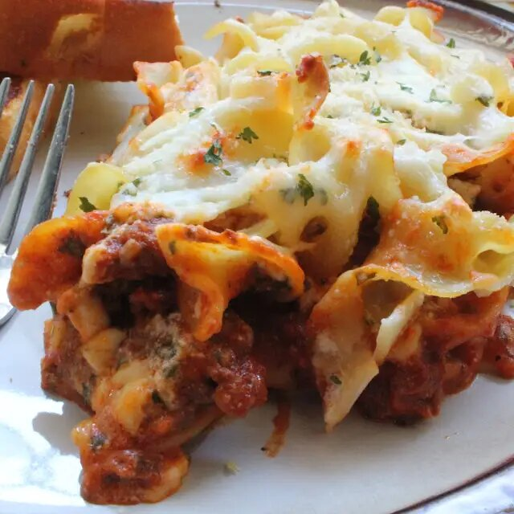

Egg Noodle Lasagna

Description
This recipe, provided by a user on a long-forgotten internet forum,
is good and easy. :D
Ingredients
- 1 (16 oz.) pkg. egg noodles
- 1 lb. hamburger
- 1 jar Ragu (Homestyle)
- 8 oz. shredded Cheddar
- 8 oz. shredded Mozzerella
- 1/2 cup Parmesan
- 1 large container cottage cheese
- 2 eggs
Steps
- Brown hamburger; add Ragu. Cook noodles; strain.
- Mix noodles, Cheddar, Mozzerella, Parmesan, cottage cheese, and eggs.
Stir well.
- Layer hamburger sauce with noodles (add sauce first).
- Bake at 350 degrees F for 45 minutes or until browned golden on top.
- Serve with salad and garlic bread.